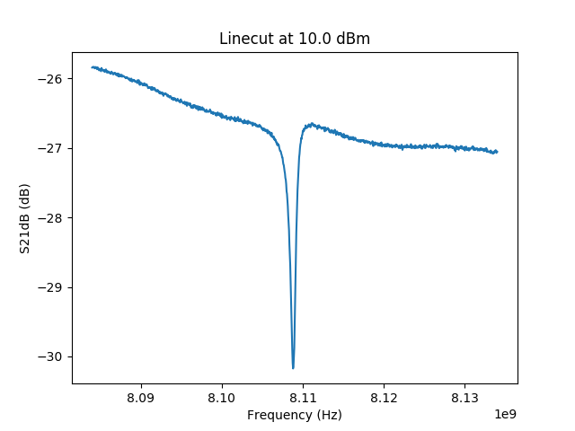
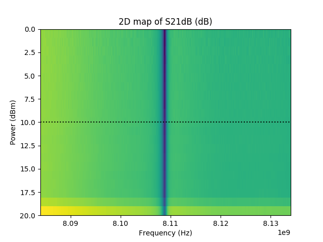

Example for readdata¶
Example for loading and saving data
There are various options available for dataprocessing for mymtx. The advantage over autoplot doing it this way is that you have the actual data at your hands, if you wish to do data processing. For only displaying the data, stlabutils.autoplot is the preferred option.

Linecut of M59_2017_06_26_16.58.40_RF_vs_power_m60dbmatt_2amp_ref_sample.dat.¶

2D map of M59_2017_06_26_16.58.40_RF_vs_power_m60dbmatt_2amp_ref_sample.dat.¶
"""Example for loading and saving data
There are various options available for dataprocessing for mymtx.
The advantage over autoplot doing it this way is that you have the actual data at your hands,
if you wish to do data processing. For only displaying the data, stlabutils.autoplot is the
preferred option.
"""
import stlabutils
import matplotlib.pyplot as plt
# Import data
myfilename = './data/M59_2017_06_26_16.58.40_RF_vs_power_m60dbmatt_2amp_ref_sample.dat'
mydata = stlabutils.readdata.readdat(myfilename)
# Plot linecut
idx = 10
myblock = mydata[idx]
rfpow = myblock['Power (dBm)'][0]
plt.plot(myblock['Frequency (Hz)'], myblock['S21dB (dB)'])
plt.xlabel('Frequency (Hz)')
plt.ylabel('S21dB (dB)')
plt.title('Linecut at {} dBm'.format(rfpow))
plt.savefig('example_readdata1.png')
plt.show()
plt.close()
# Plot 2D map
mymtx = stlabutils.framearr_to_mtx(
mydata, key='S21dB (dB)', xkey='Frequency (Hz)', ykey='Power (dBm)')
plt.imshow(mymtx.pmtx, aspect='auto', extent=mymtx.getextents())
plt.axhline(rfpow, ls=':', c='k')
plt.xlabel('Frequency (Hz)')
plt.ylabel('Power (dBm)')
plt.title('2D map of S21dB (dB)')
plt.savefig('example_readdata2.png')
plt.show()
plt.close()